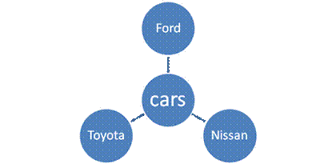
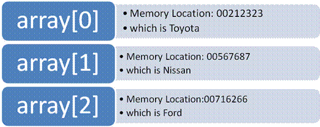

Linked Lists and C++
By Daniel Glucksman
What do
we assume for those who read this?
- A basic background in C++
- You know what objects, classes, and pointers do on a very
basic level
-You’ve worked with arrays for a brief period of time and understand
their operation
How is a
class created?
Let’s say we
want to create a class called cars; furthermore we want the class cars to
contain objects called Toyota, Nissan, and Ford as illustrated below:

The basic
code for creating this will look something like this
Class cars
{
int
enginesize, wheellength;
};
Int main()
{
cars Nissan, Ford,
return 0;
}
Explanation of above code:
“Class cars”
Here we are
defining a class cars
“int
enginesize, wheellength;”
We are
giving it the variables enginesize and wheellength both of type int. Our objects of class cars
“cars Nissan, Ford,
Your class doesn’t
actually exist before this line, you can’t call it from the main, but what you
can do is create objects and then call those objects. We are now creating 3
objects for our class cars, which we call Nissan, Ford, and
What’s
the problem with above method of creating objects?
While it’s
true we have created 3 objects successfully. There are two problems with this
method of defining objects in the main:
1) If we wanted to create
a large amount of objects like 100,000 cars, it would take forever.
2) The objects are predefined whether we need them or not; in
some cases we might only need 4 cars and in some 10,000 but the fact remains
100,000 are created every time and stored in memory(What a waste?)
What’s
another way to create objects?
A better way
to create an object is what’s called dynamic allocation or on the fly creation.
In this method you only create an object when you need it. The code is written
below:
Int main()
{
cars*ptr;
ptr=new cars;
return 0;
}
Explanation of above code:
cars*ptr;
This is
where pointers come into play; here we are creating a pointer called ptr, which points to an object of the class cars. So in our
case it either points to
“ptr=new
cars;”
We are
creating a new object of class car and while we don’t give it a name like
For
example: if we are creating the object
-
we create a new car
-
-store it’s memory location which we will say is
Now ptr knows where to find the
object
What’s
the problem with this method?
The problem
with the above method is very simply the fact that you need a new pointer for
every object you create otherwise the previous one get’s erased and you don’t
know where to find it.
For
example: The following happen if we want to create
another new car after
ptr=new cars; //This is
ptr=new cars //this is Nissan
-The memory
location we used to find
-
Obviously
creating a new pointer each time will solve this but do you want to create
100,000 pointers?
How do we
reconcile the above issue of creating 100,000 pointers?
The first
way is to create an array of pointers. Each place in the array points to a
different object of cars.
-array[0] points to
-array[1] points to Nissan …….
The
following is illustrated below:

The code for
executing such as operation is written below
Int main()
{
cars*ptr[100];
ptr[i]=new cars;
return 0;
}
Explanation of above code:
“cars*ptr[100];”
-
Here we create an array called ptr(size
100) of pointers which each point to objects of the class cars(Nissan,
-
So ptr[0] will point to
“ptr[i]=new cars;”
Here we
create a new car on the fly like before but this time we must store it in a
place of the array , so “i”
represents the index of the array.
“i”
must progress, how would you accomplish this? Either using a loop or some other
clever technique it’s up to you.
For
example:
For(i=0;i<100;i++);
Explanation of above code: Here we have a loop
which creates 100 objects each one stored in a place in the array from 0 to 99.
Summary:
So far we have explained the advantage of using an array to point to
objects of a class. Let’s just recap the main points
· By not using an array
you either must predefined objects such as cars Nissan or create them
dynamically using the new command but have a different pointer for each object
created.
·
By using an array you can create objects on
demand and use only one array to store
all of them
What are
the advantages and disadvantages of using array?
Advantages:
·
Ability to store multiple objects
·
You can go straight to any point in the array by
knowing its index. So if I want to access the 5th object I just go
to ptr[5]
or more correctly ptr[4] since an array starts from 0.
Disadvantages:
·
An Array upon creation must be given a definite size, so in
our case we decided it to be 100 spaces wide. If we wanted to create object 101
we could do this but we need to create a bigger array and then copy the first
array into the new array which as you can guess is inefficient.
·
A new member of the array should be added to the
last unused place of the array.
For example: If we already had 3
objects and wanted to add a 4th we should add it to position 4 of
the array and while possible will be very inefficient to add it at position 2
and move everything over.
Example why it
is bad to have to add things to the end of the array: if you want to sort the array let’s say by
lowest enginesize to highest enginesize,
then each time you add a new object to the end you must sort it again moving
everything over.
For example: if we are adding Nissan to the end of the list
and it has the lowest engine size, then when we sort we have to put Nissan in
the front of the list and move everything over which once again is inefficient.
Where do
linked lists come into all this?
A linked
list is another way to solve the issue above of having to create 100,000
pointers. The linked list just like an array has it’s
own advantages and disadvantages. A good programmer should know when to use an
array and when to use a linked list. Hopefully I will help you make this decision.
What is a
linked list?
You should
think of a linked list as being a list of objects in our case
Understanding
what this pointer will do is the key to linked lists.
The code
will look like this:
class cars
{
int enginesize,
wheellength;
cars*nextobject; //this is the key to linked lists
cars(int enginesize,int wheellength)
{
this enginesize->enginesize;
this
wheellength->wheellength;
}
};
Explanation of above code:
“cars*nextobject; “
We declared
a pointer called nextobject to be a pointer to
objects of the class cars. So in our case nextobject
can either point to Nissan,
“cars(int enginesize,int
wheellength)
{
this
enginesize->enginesize;
this
wheelength->wheellength;
}”
This is a
constructor function which intializes the values enginesize and wheelength with
the values sent to this function by our other function which adds objects to
the class cars as we will see later on.
What on
earth does this nextobject pointer do?
The pointer nextobject exists within every object created. Its job is to
point to the next object in the list more specifically it points to the next
object’s memory address.
For
example: Toyota will point to Nissan and Nissan will
point to Ford or to be more exact Toyota will point to the memory location of
Nissan, Nissan will point to the memory location of Ford…..
The
following idea is illustrated below:
Why would
we want to point to the next object?
By knowing
the first object in the list, in our case
For
example: Here is how we
can find Ford by knowing the first object in the list,
·
We start with
·
Then we look at Nissan’s “nextobject”
which contains the memory location to the object Ford.
What
about Ford’s “nextobject” value it’s the last on the
list?
For the last
object on a linked list we have several options of what to do with its “nextobject” value.
-We can set
it to 0 thereby telling the program it’s the last object in the list
-We can set
it to the first object on the list making the list circular;
For
example: To make the list circular we will point
Ford’s “nextobject” value to the memory location of
Remember that
all the pointer “nextvalue” stores is the memory
address of the next object in the list,
except for the last object which as discussed above has a unique value.
How do we
get the last object in the list to equal this unique value?
First of all in the program we will write we are going to have the last
object’s “nextobject” pointer value equal 0. To do
this we must add a line to our cars class constructor function:
“cars(int enginesize,int
wheellength)
{
this
enginesize->enginesize;
this
wheelength->wheellength;
nextobject=0;
}”
Explanation of above code:
“nextobject=0;”
This line sets the
nextobject value of every object created to 0 by default. Later if another
object will be added we will change that nextobject value of the previous
object to point to the memory location of the new one. This line guarantees
that the last object’s “nextobject” value will equal 0;
What are
the advantages and disadvantages to linked lists.
Advantages:
·
You can add an infinite number of objects to the list, you just
keep linking them
·
You can add an object anywhere in the list
For
example you can add a 3rd
object between objects one and two. In our case you can add Ford between
Disadvantages:
·
You can’t jump to a certain object in the list like you can
in an array. Instead you must start from the beginning and find your way
through the list via the “nextobject” pointers.
Ok now that
we understand what linked lists are in there most basic form we can talk about
how we would create this list. In the next part we will write a function which
creates a linked list and adds objects to it (
Creating a Linked List
Conceptually
how do we create a linked list?
There are
two considerations which must be taken into account before we start to write
our function and they are listed below:
·
In a linked list we find any object by starting with the
first object and finding our way to the rest. That said we must always know the
first object in the list. We are going to create a pointer called “head” which
keeps track of this first object.
·
To add an item to the list we have to set the
previous object’s “nextobject” value to the new
object we create.
For example: if we create Nissan we
must set
How do we
actually write our linked list add function?
The first
two lines of code we need in our function are:
cars*temp;
Temp=new
cars;
Explanation of above code:
“cars*temp;”
Basically here we are creating a new pointer
called temp, which will be used to point to the memory location of objects in
the class cars such as
“Temp=new
cars;”
Here we are
creating a new object of class cars (which in our first case is
Now we need
a way to link the previous object’s “nextobject”
value with the new object we just created. To do this we need to find the last
object in the list, How do we find the last object? by
starting from the beginning and finding our way through the list of objects
until we find the object who’s “nextobject” value
equals 0 which means there is no next object after that one, so it’s the last
one.
Please
examine carefully the code below:
cars*head;
cars*Temp2;
Temp2=head;
while(Temp2->next!=0)
{
Temp2=Temp2->next;
}
Temp2->next=Temp;
Explanation of above code:
“cars*head;”
We create a
pointer called head which points to objects of the class cars such as
“cars*Temp2;”
Here we
create another new pointer which we call temp2, which will be used to point to
objects of the class cars such as
“Temp2=head;”
We
initialize Temp2 to equal the memory location of the first object in the list
which is what the pointer “head” points to. Temp2 will start from the first
object and progress until it finds the last object;
“while(Temp2->nextobject!=0)”
This while
loop will only quit when the current object’s “nextobject”
value is equal to 0 meaning it’s the last object in the list.
“Temp2=Temp2->next;”
Starting
from the first object called “head” this line of code progresses the pointer Temp2
through the list till it reaches the end.
“Temp2->next=Temp;”
This is a
key line; it sets the last object in the list’s “nextobject”
value equal to the new object we created, making this a linked list.
How do we
get head to point to the first object in the list(
We can
accomplish this by writing an if statement such as
that below:
If(head==0)
{
head=Temp;
}
Explanation of above code:
“If(head==0)”
When does
head=0? Only when the list is empty. So we are
checking if the list is empty.
“head=Temp;”
Here we set
head to point to the first object we created. Remember this line of code only
executes when the list is empty.
How do we prevent double entries to
the list?
Let’s say we added a variable called serialnumber,
and each time we created a new car we assigned it a value. Now we know that no
two cars have the same serial number, so we may want to prevent duplicate
entries by writing the following code:
if
(temp2->serialnumber==serialnumber) //if duplicate exists
{
delete temp;
cout<<"already exists"<<endl;
return;
}
Explanation of above code:
“if
(temp2->serialnumber==serialnumber)”
This line of code
checks if the serial number of the current object is equal to the serial number
of the new object we just created. Obviously this line will be placed within
our while loop so it will check every object from beginning to end.
“delete temp;”
cout<<"already exists"<<endl;
Here we are
deleting the new object from memory and letting the user know that their object
already exists.
However we also
need to add this exact if statement a second time after the while loop ends.
The reason is that the while loop progresses to the last object, it quits
before actually checking if that last object is a duplicate. By adding the If
statement following the while loop we are checking that last object.
How does
the code look put together?
class cars
{
public:
int wheellength, enginesize;
cars*nextobject; //link list pointers
//constructor function
cars(int enginesize, int wheelength)
{
this->enginesize=enginesize;
this->wheellength=wheellength;
nextobject=0;
}
};
void add(int
enginesize,int wheellength)
{
//creates a new object
of the class cars and sends the enginesize and wheellength values which it gets
from the user.It stores this value in the pointer temp
temp=new cars(enginesize, wheellength);
if (head==0)
//Check if this is the first object
{
head=temp;
}
else if (head!=0)
//Checks if this is not the first object
{
temp2=head;
while(temp2->next!=0)
{
if
(temp2->serialnumber==serialnumber)//if duplicate
exists
{
cout<<"already
exists"<<endl;
delete temp;
return;
}
temp2=temp2->next;
}//end of while
if
(temp2->serialnumber==serialnumber) //if duplicate exists on last time
{
cout<<"already
exists"<<endl;
delete temp;
return;
}
temp2->next=temp;
}//end
of else if
}//end of function
Deleting from a linked list
Conceptually how do we
delete from a linked list?
There are four considerations we must take into
account before writing our delete function
1) If we delete the first
item of a list, we must change the value of head to the next object in the
list.
2) If we delete the last
item in the list we must set the nextobject value of the previous object to 0
3) If we delete the first
item of a list and it is also the only item in the list, we must set head equal
to 0
4) If we delete an object
from anywhere else in a list, we have to set the previous object’s “nextobject”
value to point to the object following the one we want to delete.
How do we
actually write our linked list delete function?
In our
function we are going to delete an object based on a search criterion, so first
we have to check a certain variable of every single object from beginning to
end and if it matches our seachterm we execute the
delete procedure. In this program we are going to check enginesize:
If(head==0)
{
Cout<<”list
is empty”
Return;
}
Else
{
Temp2=head;
While(temp2->nextobject!=0)
{
If(head==temp2&&temp2->enginesize==searchterm) //Scenario 1
{
Head=temp2->nextobject
Temp=Temp2;
Temp2=Temp2->nextobject;
Delete Temp;
}
Else If(temp2- >nextobject->enginesize==searchterm)
{
Temp=Temp2->nextobject;
Temp2->nextobject=Temp2->nextobject->nextobject;
Delete
temp;
If
(temp2->nextobject!=0) //last case deleted scenrio#2
{Temp2=Temp2->nextobject;}
Else
{
Temp2=Temp2->nextobject;
}
}
If(head==temp2&&temp2->enginesize==searchterm)//scenario
3
{
Delete temp2;
Head=0;
}
}
Explanation of above code:
“If(head==0)”
“cout<<”list is empty”
“Return;”
Here we
check if the list is empty, if it is there is nothing to delete and we want to
tell the user.
“Temp2=head;”
We
initialize Temp2 to point to the memory location of the first object in the
list
“While(temp2->nextobject!=0)”
Just as
before, we progress through the list until we reach the object whose “nextobject” value is equal to 0, meaning it’s the end of
the list.
“If(head==temp2&&temp2->enginesize==searchterm)”
This line
takes into account our first scenario where we are deleting the first item in
the list and there are other items following it. We are saying if the current
object we are checking is the first object in the list and its enginesize is equal to our search term then
“Head=temp2->nextobject”
Change the
value head to the next object in the list, since we will delete the current
first object.
“Temp=Temp2;”
We assign a
new pointer called Temp, to point to the same location as Temp2. The reasoning
is because we need to both progress Temp2 to check the
next object and also delete it. With just one variable if we delete Temp2 we
can’t progress it since it doesn’t exist, and if we progress it first, then we
don’t know what to delete.
“Temp2=Temp2->nextobject;”
We progress
Temp2 to the next object, so we can check it
Delete Temp;
Here we
delete the object.
“Else If(temp2- >nextobject->enginesize==searchterm)”
We are
checking if the next object in the list’s enginesize
is equal to our search term. This statement will never check the first object
in the list which is ok, since we have our first if statement checking that. It
will also check the last object, so we don’t need to write another if statement
to do this following the while loop like before.
“Temp=Temp2->nextobject;”
We are assigning Temp to point to the object we
want to delete which is going to be the next object after temp2, since our
search statement is checking the next object and not the current one.
“Temp2->nextobject=Temp2->nextobject->nextobject;”
This sets the previous object’s Temp2,
nextobject value to equal that of the object following the one we want to
delete.
“Delete temp;”
This deletes our object from memory
“If (temp2->nextobject!=0)“
“Temp2=Temp2->nextobject;”
This line takes into account scenario 2 when we
are deleting the last object from the list, this makes sure we only progress
Temp2 if it’s not the last object because if it is the last object then Temp2 “next
object” based on the code will be set to 0. Therefore progressing Temp2 to
equal Temp2 “next object” will causes Temp2 to equal 0
When we get to the while loop the program will
crash because there will be no temp2->nextobject since temp2 will equal 0.
Instead we leave Temp2 as the last object before the deleted one and check that
“nextobject” value which will equal 0 and the while loop will fail.
“If(head==temp2&&temp2->enginesize==searchterm)”
This takes into
account scenario 3 where the first and only object is being deleted
“Delete temp2;”
We just delete the
current object
“Head=0;”
We set head to 0,
to indicate the list is empty
Printing our list
Conceptually how do we
print out our linked list?
First we have to decide which information to print
out for each object. Do we want to print out only the enginesize? Or maybe also
the wheellength?
After this is decided we must write code which
loops through the entire list from beginning to end printing each item
How do we
actually write our linked list print function?
if(head==0)
{
Cout<<”list
is empty”
Return;
}
Else
{
Temp2=head;
while (temp2->next!=0)
{
Cout<<enginesize; //whatever else you want to include put here
Temp2=Temp2->next;
}
Cout<<enginesize;
//whatever else you want to include put here
}
Explanation of above code:
“if(head==0)”
We check if
the list is empty
“while (temp2->next!=0)”
We go
through the entire list, but remember we don’t check the last entry so must
include another “Cout” following the while loop
Adding a previous pointer to each
object
We may want to add a “previousobject” pointer
so each object always know the object before it, and the first object’s
p”reviousobject” pointer has a value of 0 or points to the last item in a list
in a circular list.
How do we intialize this
pointer?
We start by declaring our pointer within the
class cars
Cars*previousobject
We also want to intalize it’s value to 0, so we
add to our constructor function the following line
Previousobject=0;
Conceptually how do we
create this pointer?
Whenever we add a new item to the list , we
need to set its “previousobject” value equal to the previous object. We have a
special case, when we create the first object, we have to leave the previous
objects value equal to 0
Whenever we delete an item from the list, we
need to set the “previousobject” value of the object following the deleted
object to the object before the deleted one. However there are some exceptions
1) When we delete the first object in a list
and it is the only object in the list, we don’t need to do anything
2) When we delete the first object in a list
and there are other objects, we have to set the “previousobject” value of the
object following the deleted one to 0.
3) When we delete the last object in the list,
we have to do nothing.
How do we
actually code this pointer operation for adding?
We will be
adding onto the code we wrote before
First to the
add function we have to add the following lines:
void add(int
enginesize,int wheellength)
{
//creates a new
object of the class cars and sends the enginesize and wheellength values which
it gets from the user.It stores this value in the pointer temp
temp=new cars(enginesize, wheellength);
if (head==0)
//Check if this is the first object
{
head=temp;
}
else if (head!=0)
//Checks if this is not the first object
{
temp2=head;
while(temp2->next!=0)
{
if
(temp2->serialnumber==serialnumber)//if duplicate
exists
{
cout<<"already
exists"<<endl;
delete temp;
return;
}
temp2=temp2->next;
}//end of while
if
(temp2->serialnumber==serialnumber) //if duplicate exists on last time
{
cout<<"already
exists"<<endl;
delete temp;
return;
}
temp->previous=temp2
temp2->next=temp;
}//end
of else if
}//end of function
Explanation of above code:
“temp->previous=temp2”
This sets the
“previousobject” value of the newly created object to that of the one before.
Remember this line doesn’t execute when you create the first object
How do we
actually code this pointer operation for deleting?
If(head==0)
{
Cout<<”list
is empty”
Return;
}
Else
{
Temp2=head;
While(temp2->nextobject!=0)
{
If(head==temp2&&temp2->enginesize==searchterm) //Scenario 1
{
Head=temp2->nextobject
Head->previousobject=0; // scenario 2
Temp=Temp2;
Temp2=Temp2->nextobject;
Delete Temp;
}
Else If(temp2- >nextobject->enginesize==searchterm)
{
Temp=Temp2->nextobject;
Temp2->nextobject=Temp2->nextobject->nextobject;
Delete
temp;
If
(temp2->nextobject!=0) //last case deleted scenrio#2
{
Temp2->next->previous=Temp2 //scenario 3
Temp2=Temp2->nextobject;
}
Else
{
Temp2=Temp2->nextobject;
}
}
If(head==temp2&&temp2->enginesize==searchterm)//scenario
3
{
Delete temp2;
Head=0;
}
}
Explanation of above code:
“Head->previousobject=0;”
This takes
into account scenario 2 when the first object is being deleted and there are
other objects that follow, we need to progress head, and then set the “previousobject” value of that new object equal to 0, since
it is now first.
“Temp2->next->previous=Temp2”
This line sets the “previousobject” of value of
the one following the deleted one to the one before it.
Scenario 3 which is when we are deleting the last
it taken into account by being place in our if statement insuring that this
operation is only performed when it’s not the last one.
Keeping track of the last object in a
list
It may be
useful to keep track of the last object in the list with a pointer called last,
how would we keep track of the last object?
Conceptually how do we use
this pointer?
Everytime we create a newobject that is the
last one in the list, so in our add function we will have a line
Temp=last;
The problem is when we delete the last object
in the list, we need to update last to be the one before. We can solve this
with an else statement such as this
else
{last=temp2;}
In addition if we delete the first and only
object, we need to set last equal to 0. The following line place within our add
function will suffice
Last=0;
How do we
actually code this for deleting?
If(head==0)
{
Cout<<”list
is empty”
Return;
}
Else
{
Temp2=head;
While(temp2->nextobject!=0)
{
If(head==temp2&&temp2->enginesize==searchterm) //Scenario 1
{
Head=temp2->nextobject
Head->previousobject=0
Temp=Temp2;
Temp2=Temp2->nextobject;
Delete Temp;
}
Else If(temp2- >nextobject->enginesize==searchterm)
{
Temp=Temp2->nextobject;
Temp2->nextobject=Temp2->nextobject->nextobject;
Delete
temp;
If
(temp2->nextobject!=0) //last case deleted scenrio#2
{
Temp2->next->previous=Temp2
Temp2=Temp2->nextobject;
}
Else
{
Last=temp2;
}
Else
{
Temp2=Temp2->nextobject;
}
}
If(head==temp2&&temp2->enginesize==searchterm
{
Delete temp2;
Head=0;
Last=0;
}
}
Explanation of above code:
“Else
{Last=temp2};”
This line of
code says if the last term is being deleted then set last to point to the one
before the deleted object.
“Last=0;”
This says if the
first and only object is being deleted then set last equal to 0;
Summary: so now we
have previous pointers in each object and a last pointer to keep track of the
last object in the list. What operations can we perfrom with this?
Printing the list backwards
How
do we print backwards conceptually?
We want to start at
the end of the list and follow the previous links till we get to when
previousobject=0 which means it’s the end of the list.
How
do we code this?
If(head==0)
{
Cout<<”list
is empty”<<endl;
Return;
}
Temp2=last;
While(temp2->previous!=0)
{
Cout<<enginesize;
Temp2=temp2->previous;
}
Cout<<enginesize;
Explanation of above code:
“Temp2=last;”
We want to start
from the back of the list
“While(temp2->previous!=0)”
“Temp2=temp2->previous;”
We start from the
end of the list and keep progressing till we find the previousobject is equal
to 0, which means we’re at the end of the list, however the loop quits before
we actually print to the screen the last object.